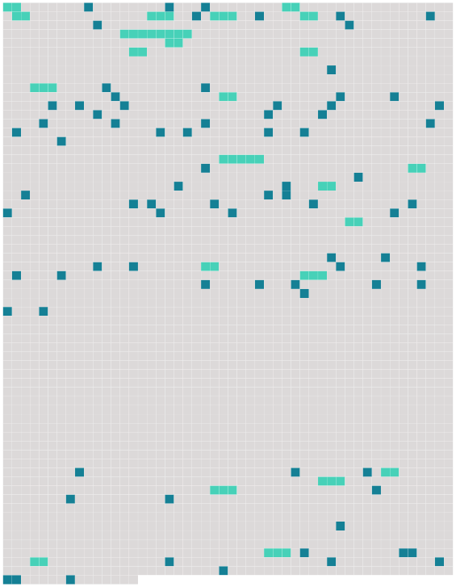

Longueur nb maillons : 106 mentions |
 |
[Une femme] était étendue au fond sans mouvement : [elle] semblait morte, mais en se penchant sur [elle] on vit qu' [elle] respirait encore.
On se hâta de transporter [la naufragée] à Némoville, et on accosta à la résidence de Marcelle, où le prêtre suggéra de laisser [la malade]
On manda le docteur Desmarais, qui donna des soins efficaces à [la jeune fille] — car [c'] était [une jeune fille] , et [elle] était fort belle. [La naufragée] reprit bientôt [ses] sens, et comme on ne pouvait pas convenablement [l'] installer dans le « Nautilus », Roger demanda à Marcelle de [la] garder auprès d'elle, ce que celle -ci accepta avec empressement. Ce fut en rougissant de plaisir que Marcelle répondit qu'elle était heureuse de [lui] rendre ce service ; et elle disait la vérité, car elle pensait bien que le gouverneur ne manquerait pas de s'intéresser à [celle qu'il avait sauvée de la mort] , et lorsqu'il viendrait elle aurait l'occasion de le voir. [1 phrases]
[L'étrangère] fut déposée sur un lit et abandonnée aux soins de la vieille servante, tandis que Marcelle retournait dans le salon, où Roger attendait le verdict du médecin pour prendre congé. Il demanda à Marcelle la permission de revenir s'informer de [la malade] : « Mademoiselle Marcelle, dit -il, me permettez -vous de revenir prendre des nouvelles de [votre protégée] ?? [7 phrases]
Marcelle et [Gaétane] formaient un étrange contraste de beauté, et ce soir -là, en les voyant toutes deux dans le petit salon du sous-marin, il eût été difficile de dire laquelle était la plus belle, de la blonde Marcelle, avec sa profusion de cheveux d'or et son teint de lys et de rose, que trouaient ses grands yeux bleus ; ou de [la brune Gaétane] aux cheveux noirs, encadrant [son] visage régulier, très pâle, et que semblaient éclairer [ses] yeux bruns profonds. [1 phrases] — « Vos reproches [me] font bien mal, disait la voix douce et chantante de [l'étrangère] , mais tout en éprouvant une grande reconnaissance pour celui qui [m'] a sauvé la vie, [je] ne puis me défendre d'un réel malaise, lorsqu'il [me] regarde ou [m'] adresse la parole. [Je] ne le hais pas, ainsi que vous le dites, ce serait une ingratitude dont [je] suis incapable, mais il [me] fait peur, réellement peur.
» … mais il est parfait de bonté pour [vous]
»
Pour se mentir à elle -même, Marcelle se disait que le médecin [lui] avait vraiment sauvé la vie, puisqu' [elle] n'avait que le souffle, quand le gouverneur [la] lui avait confiée.
La veille, le médecin avait passé quelque temps avec les jeunes filles et s'était surtout montré aimable pour [Gaétane] , et il [l'] avait un peu surprise en lui demandant au cours de la conversation :
» [2 phrases] Ils parlèrent longuement ensemble, et le médecin dit en quittant la jeune fille : « N'oubliez pas que tout dépend de vous, Marcelle ; je vous promets qu'avant trois mois, vous serez la femme du gouverneur, si vous suivez mes conseils ; et moi j'épouserai [la fille du capitaine Laurent] [2 phrases] Elle avait à peine repris sa place auprès de [Gaétane] , lorsque la vieille servante entra, apportant sur un plateau, la carte du gouverneur.
Marcelle rougit si violemment que [sa compagne] l'en plaisanta. — « C'est le gouverneur de Némoville, dit Marcelle, qui demande à être reçu ; il vint souvent », ajouta-t -elle, en baissant les yeux, comme si elle eût eu peur que [Gaétane] y pût lire le mensonge qu'elle faisait, en assurant que le gouverneur venait souvent chez elle. « Celui -là, ajouta-t -elle, j'espère que [vous] l'aimerez …… [1 phrases]
»
»
Elle présenta [Gaétane] , [que] le jeune homme sembla chercher des yeux, dès qu'il eut franchi le seuil du salon, et tous trois s'assirent et passèrent ensemble une heure de gaie causerie.
[Gaétane] , [qui] avait repris toute la fraîcheur de [son] âge, était vraiment éblouissante de beauté, lorsque Roger [la] regardait, rougissante et un peu timide. — « [Mademoiselle] , j'espère que [vous] ne vous ennuyez pas à Némoville?? [1 phrases] non, répliqua-t [-elle] , on est si bien ici, [je] me sens si en sûreté auprès de Marcelle ……
» [1 phrases]
Il l'avait écoutée en regardant [sa compagne] [10 phrases] Il ne faisait pas beaucoup de progrès, auprès de [Gaétane] ; bien au contraire, [elle] semblait plus réservée et plus froide que jamais avec lui.
Un jour qu'il avait voulu [lui] baiser la main [elle] l'avait retirée avec indignation et lui [avait dit] en colère : … » Puis [elle] avait quitté la chambre avant qu'il pût [lui] demander l'explication de [sa] conduite étrange.
Depuis [elle] le fuyait ostensiblement.
D'un autre côté, ce n'était plus un secret dans Némoville que le docteur Desmarais était très assidu auprès de [la belle étrangère] ; on le voyait souvent se diriger vers la demeure de Marcelle, mais on savait que ce n'était plus à Mlle Richard qu'il pensait. Un jour que le docteur Desmarais était avec [Gaétane] , il se jeta à [ses] genoux, en [lui] faisant une déclaration d'amour si inattendue qu' [elle] demeura interdite.
Comme [elle] faisait un mouvement pour se lever et se soustraire aux protestations du médecin, la porte du salon s'ouvrit et Marcelle entra accompagné de Roger, qui resta interdit devant le groupe romanesque que présentait [Gaétane] et le médecin. [1 phrases]
» [39 phrases] Cette voix, c'était celle de [Gaétane] Quand le chant pieux fut terminé, M. Duflot se pencha à l'oreille de Roger et lui demanda : « [Qui] donc chante ainsi??
»
Les deux hommes ne parlèrent plus tout le temps que dura la messe, mais en sortant de la chapelle, M. Duflot reprit la conversation où il l'avait laissée : [1 phrases] Il ajouta : « Toute la personne de [cette jeune fille] a quelque chose d'éthéré, presque de surnaturel ; il semble que rien en [elle] ne ressemble aux autres femmes. Vous le constaterez, monsieur Duflot, quand vous [la] connaîtrez. Pour me servir d'un vieux cliché, [elle] a l'air d'un ange égaré sur la terre. [6 phrases] Après la messe, tous les personnages dont il a été question dans ce chapitre moins les deux jeunes filles, [Gaétane] et Jeanne, se réunirent chez le gouverneur. [4 phrases] Monsieur le curé, demanda, tout à coup : « M. Duflot, [cette jeune fille] , [qui] a si bien chanté « Minuit Chrétiens », a-t [-elle] [ses] parents à Némoville??
» [1 phrases] … [Son] nom n'est -il pas Laurent??
… » [1 phrases] … [Elle] se nomme Gaétane?? [2 phrases] … [son] nom est Laurent?? [1 phrases]
» |
 |
La ressource peut être téléchargée sur la page Ortolang
Si vous avez des questions ou vous voyez des erreurs, merci d'envoyer un mail à silvia.federzoni89@gmail.com
Site développé par S. Federzoni (contact)